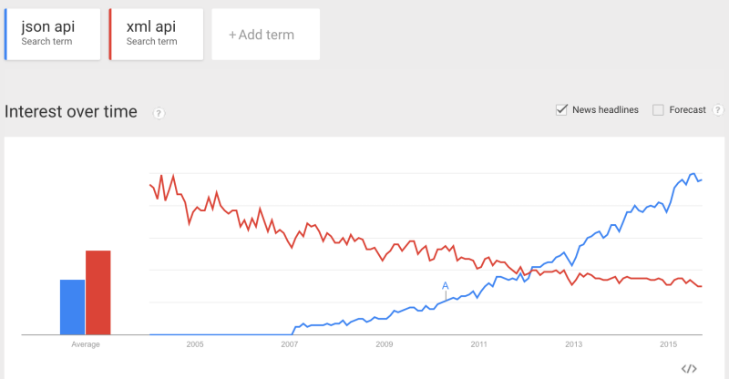
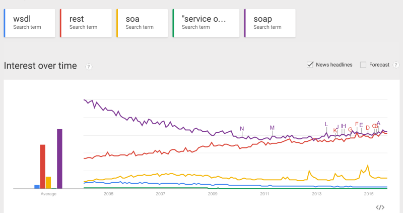

Petri Ihantola, edited by Antti Nieminen
Creative Commons Attribution 4.0 International


Your customers, their environment, etc.
vs. global trends.
continues from yesterday
Resources are nouns, use plurals only to keep it simple.
/books//book/42/books/42
| GET | POST | PUT | DELETE | |
|---|---|---|---|---|
| /books | ??? | ??? | ??? | ??? |
| /books/42 | ??? | ??? | ??? | ??? |
| GET read |
POST create |
PUT update |
DELETE | |
|---|---|---|---|---|
| /books | Returns a list of books | Create a new book | Bulk update of books | Delete all books! |
| /books/42 | Returns a specific book | Method not allowed (405) | Updates a specific book | Deletes a specific book |
See, e.g., http://www.restapitutorial.com/httpstatuscodes.html
You can use sub-resources for relations
GET /books/42/authors/
GET /authors/
HTTP headers communicating serialization format
Authentication and authorization are different. Remember to do both.
There are many other good practices related to designing REST APIs. Some bad practices are also listed, e.g., https://jacobian.org/writing/rest-worst-practices/
Or do I need such?
Yahoo has a nice demo: https://developer.yahoo.com/blogs/ydn/check-wadl-7130.html
<application xmlns="http://wadl.dev.java.net/2009/02"
xmlns:ns="http://superbooks">
<grammars>
...
</grammars>
<resources base="http://localhost:8080/">
...
<resource path="/books">
<resource path="/bookstore/{id}">
<param name="id" style="template"/>
<method name="GET">
<response>
<representation mediaType="application/xml"
element="ns:thebook"/>
</response>
</method>
</resource>
</resource>
</resources>
</application><grammars>
<xs:schema xmlns:xs="http://www.w3.org/2001/XMLSchema"
xmlns:tns="http://superbooks"
attributeFormDefault="unqualified"
elementFormDefault="unqualified"
targetNamespace="http://superbooks">
<xs:element name="thebook" type="tns:book"/>
<xs:complexType name="book">
<xs:sequence>
<xs:element minOccurs="0" ref="tns:thechapter"/>
<xs:element name="id" type="xs:int"/>
</xs:sequence>
</xs:complexType>
</xs:schema>
</grammars>However, WADL is still not widely adopted.